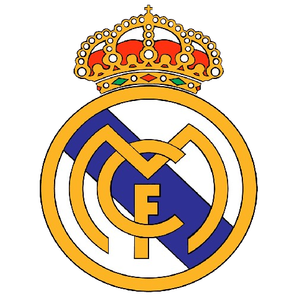
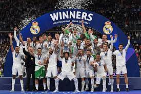

Real Madrid

História do Real Madrid
- o início de 1897, os jovens estudantes da escola Institución Libre de Enseñanza
formaram um clube de futebol
chamado de Foot-Ball Sky, nos arredores do bairro de Vallecas, que originou o atual Real Madrid Club de
Fútbol.
- Origens e Fundação. O Real Madrid foi fundado por um grupo de entusiastas do futebol, liderados pelo
visionário
Juan Padrós. Desde então, o clube cresceu exponencialmente, evoluindo de suas raízes modestas para se tornar
um
dos clubes mais ricos e bem-sucedidos do mundo A equipe soma apenas três vice-campeonatos na história. O
Real
Madrid é o clube com mais títulos da Champions League, com 14 conquistas no total. A última delas aconteceu
na
final contra o Liverpool, na edição de 2021/22
O Real Madrid tem uma história rica na UEFA Champions League. Aqui estão alguns destaques:
- - O clube venceu a competição 14 vezes, com os títulos distribuídos ao longo de várias décadas¹.
- - A primeira vitória ocorreu na temporada inaugural da Champions League, 1955-56, e o Real Madrid continuou
a vencer nas quatro temporadas seguintes, conquistando um pentacampeonato⁴
- - Depois de vencer novamente em 1965-66, o clube passou por um período de 31 temporadas sem vencer⁴.
- - O clube teve um desempenho notável nas décadas de 2010 e 2020, chegando às finais e às semifinais várias
vezes¹.
- - Alguns dos maiores artilheiros do clube na competição incluem Cristiano Ronaldo (105 gols), Karim Benzema
(78 gols) e Raúl González (66 gols)¹.
- - Jogadores como Iker Casillas (152 aparições), Benzema (133 aparições) e Raúl González (132 aparições) são
alguns dos que mais jogaram pelo clube na competição¹.
 10.40.44_d81bbe78.jpg)
- O Real Madrid foi inspirado no Corinthian FC, um clube amador de Londres que excursionou pelo mundo no
começo do século passado, para difundir a prática do futebol. Esse time também inspirou a criação de um dos
maiores clubes do Brasil, o Corinthians
- Além de maior vencedor, o Real Madrid também é o time que mais vezes participou da Champions League, com 42
aparições. Inclusive, a última vez que o Real não disputou uma edição do torneio foi na temporada 1995-96. O
segundo colocado nesta lista é o Benfica, com 41, seguido de Dínamo Kiev e Ajax, com 36 cada

Local do stadio